体型の3案の比較は roughs.html（段階1・A を採用）
約 2.3 頭身（頭 55・胴 34・脚 28）。顔は既存のアイコンのまま。部品の回転・位置・差し替えだけで組んでいます
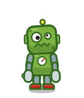
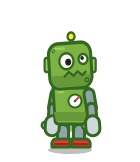
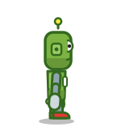
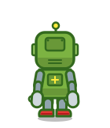
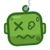
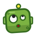
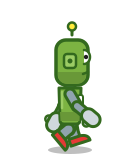
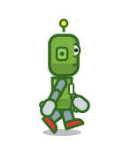
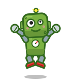
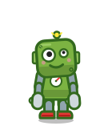
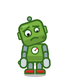
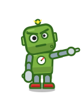
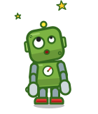
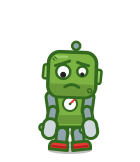
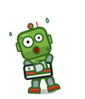
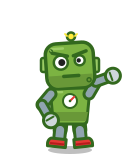
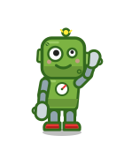
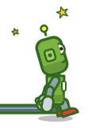
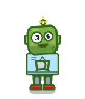
運転席が頭。窓の帯のランプが目で、鉄板のまぶたで機嫌を表す（気難しい・和らぐ・驚く）
フックは重さで常に真下へ下がる。腕組みの代わりにジブを体の前に畳む。帽子（ヘルメット）を上げるのはエンディングだけ
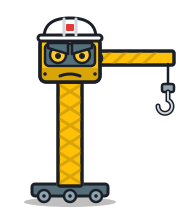
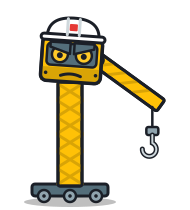
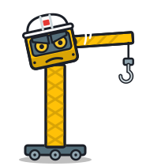
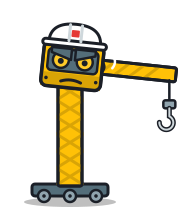
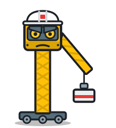
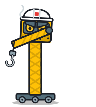
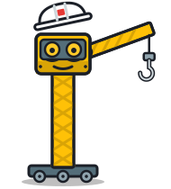
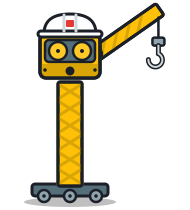
赤白のロケットに、ガラクタの部品（じょうごのノズル・ドラム缶・洗濯機の扉の窓・バケツの先端・テープの継ぎはぎ）を混ぜる。上部の背景と日ごとの幕間で同じ絵を使う
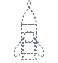
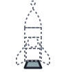
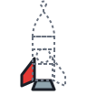
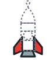
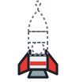
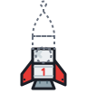
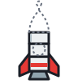
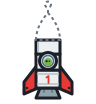